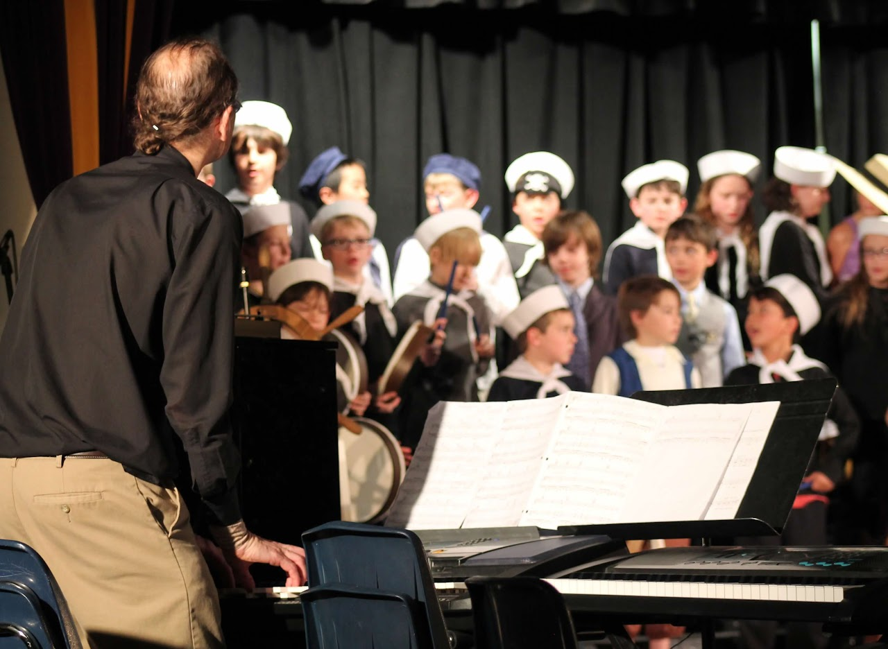

Campus Life

The Campus
The campus in Stargate Charter School contains three building the building at the top of the image is the elementary building and the building in the middle is the arts and athletics building which also contains the adroit room. Finally, the building at the bottom is the secondary building which contains the classes for the high schoolers and middle schoolers.

Music
In music we learn to sing and will do a concert or play every year for every grade but in fifth grade you get an oppurtunity to choose what you do. You can choose to do a play, choir, or a concert reflecting off of the Beetles.
Library
The library at stargate charter school is amazing it has many book and it's theme is a jungle.